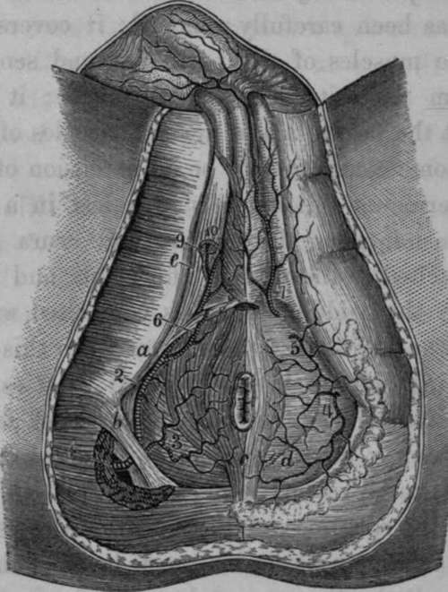

Ano Perineal Region
Description
This section is from the book "Anatomy Of The Arteries Of The Human Body", by John Hatch Power. Also available from Amazon: Anatomy of the Arteries of the Human Body, with the Descriptive Anatomy of the Heart.
Ano Perineal Region
For the purpose of dissecting this region, the subject should be placed in the same position as in that recommended for the operations of lithotomy: the hands should be placed so as to grasp the outer edges of the feet, and retained in this situation by suitable bandages : the buttock being thus elevated, the rectum should be moderately distended with curled hair or tow, the knees held apart from each other, a staff introduced through the urethra into the bladder, and the scrotum well kept up towards the abdomen.
The Ano-perineal region, when fully exposed, presents, in its outline, the shape of a lozenge or rhomb; that is, the appearance of two triangles united at their bases. The apex of the anterior triangle corresponds in the middle line, anteriorly, to the root of the scrotum superficially, and still deeper and farther forward to the symphysis pubis and subpubic ligament. The apex of the posterior triangle corresponds posteriorly to the point of the coccyx, and to the posterior attachment of the ano-coccygeal ligament. The lateral angles correspond to the two tuberosities of the ischia. The four sides of the region are formed, anteriorly, by the anterior portion of the tuberosities of the ischia, by the ascending ramus of the ischium and descending ramus of the pubis at each side; and posteriorly at each side by the posterior portion of the tuberosities of the ischia, and by the great sacro-sciatic ligament, overlapped by the glutaeus maximus muscle. A line drawn across from one tuberosity to the other would indicate the union of the two bases; this, however, is merely an artificial arrangement, as it does not accurately define the proper perineal from the anal portion of the region, since it must pass across the anterior part of the anus: but, if the line were made to describe a curve, the convexity of which, looking forwards, would in the middle line pass anterior to the anus, such a line would more correctly define the boundary of these two spaces, viz., the proper perineal and the anal, in this situation. As we pursue the dissection of this region, we will find that such a curved line does exist, and that it is formed by the two transverse perinei muscles uniting in front of the anus at their insertions in the central point of the perineum. Before raising the integuments the student would do well to observe the appearances on the surface of this region :—in the middle line, anteriorly, he will perceive an elevation corresponding to the root of the scrotum, and indicating the situation of the hinder part of the spongy portion of the urethra, and along its centre an elevated but narrow ridge, known by the name of the raphe of the perineum : this ridge terminates posteriorly at the orifice of the anus. The surface of the integument surrounding this orifice is thrown by the action of the superficial sphincter into a number of longitudinal folds, parallel with the longitudinal axis of the intestine. Behind this orifice we remark, along the middle line, more the appearance of a groove than of a ridge, leading posteriorly to the point of the coccyx. On either side of the elevation which denotes the situation of the urethra, we see a groove or channel terminating posteriorly along the side of the anus, and anteriorly running along the side of the scrotum upwards towards the abdomen. On raising the integuments from off the ano-peri-neal region we expose the superficial fascia: this layer varies in its structure according to the situation in which we examine it: in the perineal space, properly so called, it is coarse and strong, and presents a yellowish color, and is divisible into two layers, a superficial and a deep. The superficial layer is loose in its texture, containing a quantity of adipose tissue, the cells of which are united by areolar tissue : the deep layer is comparatively strong and membraniform. There is no distinction between these two layers as we pass into the anal portion of the region; for corresponding to the inferior surface of the transverse muscles of the perineum they become identified with each other, and are closely adherent to the middle perineal fascia at the posterior margin of each of these muscles, and at the central point of the perineum, in front of the anus. If we trace the two layers of superficial fascia farther back, we find them still united into one mass, which enters into and fills up the ischio-rectal spaces, which lie at the sides of the rectum and anus. The two layers of superficial fascia are also intimately united with one another corresponding to the tuberosities of the ischia, to which they become firmly adherent; and though this membrane appears to glide loosely over these prominences, when friction is exercised upon the integuments, yet, if after having removed the skin we attempt to draw away the fascia from the bone, we find it firmly adherent to it. Along the sides of the proper perineal space we find the superficial fascia firmly adherent to the ascending rami of the ischia, and descending rami of the pubes: as we examine this structure still more anteriorly we will observe, that, as it becomes related to the root of the scrotum and to the channels along its sides, the fascia loses all its adipose tissue, and the entire substance becomes areolar in its character.
When, in cases of extravasation of urine, either from laceration of the urethra from injury, or from previous ulceration in the dilated portion of the urethra behind the stricture, this fluid makes its way to the superficial perineal fascia, its course afterwards is remarkably uniform: in such cases it cannot pass backwards between the layers of the superficial fascia, because they become firmly united, both at the central point of the perineum and corresponding to the back part of the transverse muscles of the perineum; neither can it make its way backwards between the deep-seated surface of this fascia and the middle perineal fascia, because these fasciae are closely connected with each other in the situations just alluded to. It cannot pass laterally, in consequence of the close attachment which the superficial fascia takes to the tuberosities of the ischia, and to the rami of the ischia and pubes: the urine, therefore, will pass along those situations where it meets with the least amount of resistance, and it will become extravasated freely into the scrotum, distending it exceedingly; it may then extend upwards to the anterior wall of the abdomen, conducted by the spermatic cord; and descend over Poupart's ligament into the superficial fascia of the upper portion of the thigh.
In this stage of the dissection the student will find the superficial sphincter lying between the layers of the superficial fascia; and whilst removing the integument from off this muscle he will observe what an exceedingly small amount of superficial fascia lies between it and the skin: it is closely connected with the integuments, and is of an elliptical form; its posterior attachment, or origin, is to the ano-coccygeal ligament, which springs from the tip of the coccyx posteriorly, and runs forwards to be connected with the back of the rectum; this ligament is merely a raphe formed by the union of the posterior portions of the levatores ani on the middle line: the anterior attachment of the sphincter is to the central point of the perineum, which is situated immediately behind the bulb: into this point we have inserted the following muscles :—superficial sphincter, acceleratores urinae, trans-versi perinei, and Wilson's muscles. We may now remove the entire of the superficial fascia from both the proper perineal and the anal spaces; and we will thus expose, in the former space, the middle perineal fascia, and, in the latter, the two ischio-rectal fossae or spaces.
Fig. 47. View of the Perineum, exhibiting the distribution of the Internal Pudic Artery.
1, The Internal Pudic issuing from the Pelvis at the lower part of the great Sacro-Sciatic Foramen. 2, The same vessel after it has returned into the Pelvis through the small Sacro-Sciatic Foramen. 3, Inferior Haemorrhoidal Artery. 4, 5, Superficial Perineal branches to the Perineum. 6, Transverse Perineal. 7, Perineal branch to the Scrotum and skin of the Penis. 8, Bulbo-urethral Artery. 9, Cavernous Artery. 10, Dorsal Artery of the Penis, o, Tuberosity of the Ischium, b. Greater Sacro-Sciatic Ligament, c. Sphincter of the Anus, d, Perineal Fascia, which is removed on the opposite .side so as to expose the Anal Elevator Muscle, e, Ischio-Caveruous Muscle. f, Bulbo-urethral Muscle.
The middle perineal fascia will be seen when the superficial fascia has been carefully removed; it covers the under surface of the muscles of the perineum, and sends in septa between them from its deep-seated surface; it is to these muscles what the fascia lata is to the muscles of the thigh, and it is by some considered to be an extension of this fascia across the perineum. Anteriorly it is lost in a thin, loose, delicate expansion along the urethra and crura penis; laterally it is attached to the rami of the ischia and pubes; and posteriorly, in the middle line, it is connected with the central point of the perineum, whilst external to this point it is reflected behind the transverse perineal muscles, and is lost by becoming continuous with the two layers of fascia, which form the " anterior cul de sac" of the ischio-rectal space or fossa. This latter space may now be examined : it is bounded internally by the rectum, and the levator ani muscle covered on its outer surface by the ischio-rectal layer of the obturator fascia; externally by the proper obturator fascia covering the obturator internus muscle, and continuous inferiorly with the falciform process of the great sacro-sciatic ligament, and by the tuberosity of the ischium : anteriorly by the transverse muscles of the perineum, and by the union of the ischio-rectal with the proper obturator fascia, forming an anterior " cul de sac," or fossa, with which, as we have already stated, we find continuous the posterior part of the middle perineal fascia: posteriorly by another " cul de sac," formed by the ischiorectal and proper obturator fascia, becoming continuous above the great sacro-sciatic ligament and inferior border of the glutaeus maximus muscle. The superior boundary of this space is limited by the splitting of the obturator fascia into the proper obturator and ischio-rectal fascia; the space itself is filled with a large quantity of adipose and coarse areolar tissue, which inferiorly is incorporated with the superficial fascia of the ano-perineal region.
The middle perineal fascia should now be removed; when the muscles of the proper perineal spaces will be exposed; these are three at each side, viz.: in the middle line the accelerator urinae, externally the erector penis, and posteriorly the transversus perinei.
Continue to:
- prev: The Posterior Branch
- Table of Contents
- next: The Accelerator Urinae Or Compressor Urethrae Muscle